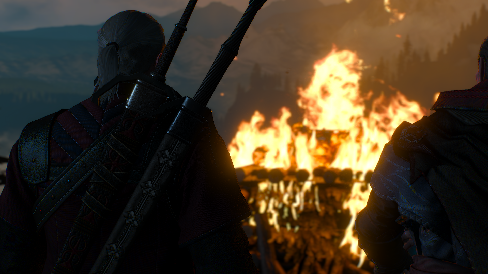

Strona główna

Gry komputerowe to nie tylko bezmyślna rozrywka dla dzieci w wieku 10-14. Mogą być one medium przekazującym treści nieuchwytne w każdy inny sposób. Łączą elementy filmów, książek i muzyki w interaktywną całość. W odbiorze sztuki ważne są nasze wrażenia, i trudniej o wrażenia gdy mamy bezpośredni wpływ na przebieg akcji.
W grach, twórcy scenariuszów mogą wykazać się bardziej, tworząc historie zmieniające się pod wpływem naszych decyzji podejmowanych w trakjie przygody. Natomiast kompozytorzy mogą dostosować muzykę do miejsca w którym znajduje się nasza postać aby wywrzeć silne emocje.
Niektóre odpowiednio skonstruowane gry poprzez rozgrywkę, mogą nauczyć nas czegoś o samych sobie.

Autor: Jan Szewczul
Indeks: 188784
Grupa: Grupa 5
Kierunek: Informatyka
Wersja Jquery: 3.6.0
Wersja Jquery UI: 1.13.0